Overview
Design Uber: Ride-Hailing at Scale
Uber is a ride-hailing service where a rider requests a ride, the system estimates the fare, finds nearby available drivers, and matches one to the rider. During the trip, the system tracks the driver's real-time location and streams updates to the rider's map. The trip moves through a lifecycle of states—searching, matched, in progress, completed—with each transition triggering side effects like notifications, fare metering, and payment.
Core Challenges
- Millions of drivers sending persistent GPS coordinates every few seconds
- Sub-second geospatial searches to find the nearest driver
- Unique driver assignment (no double-dispatch)—a driver must never be assigned to two rides simultaneously
- Durable, consistent trip records across the full ride lifecycle
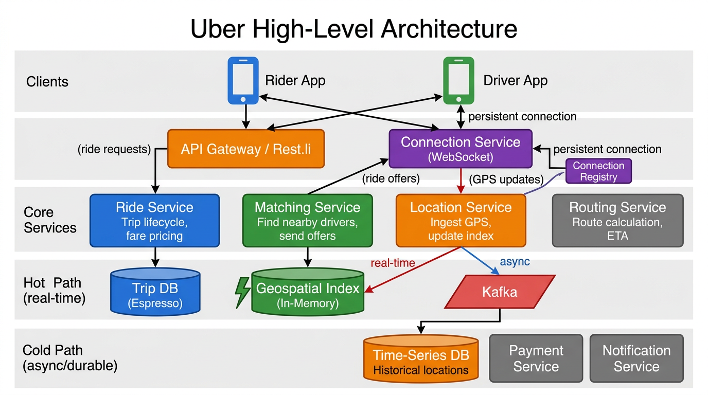
Figure 1: High-level architecture of the Uber system showing core services, data stores, and the hot/cold path split for location ingestion.
Diagram Walkthrough: High-Level Architecture
This diagram shows the entire system at a glance. Read it top-to-bottom as layers, left-to-right as data flow:
- Client Layer (top): Two mobile apps—the Rider App (blue) and the Driver App (green). The Rider App sends ride requests and receives tracking updates. The Driver App sends GPS locations and receives ride offers. Both maintain persistent WebSocket connections to the Connection Service for real-time bidirectional communication.
- Gateway Layer: Two entry points into the backend. The API Gateway / Rest.li (orange) handles REST requests like fare estimates and ride creation—these are request/response flows. The Connection Service (purple) manages persistent WebSocket connections for real-time streaming. It maintains a Connection Registry that maps each user to the specific Connection Service instance holding their WebSocket.
- Core Services Layer: Four microservices that contain the business logic:
- Ride Service (blue)—owns the trip lifecycle and fare calculation. It's the central coordinator.
- Matching Service (green)—finds nearby drivers by querying the geospatial index and orchestrates the offer/accept flow.
- Location Service (orange)—receives GPS updates from the Connection Service and splits them into two paths: real-time index updates (hot) and durable writes (cold).
- Routing Service (gray)—calculates the driving route, distance, and ETA using a road network graph.
- Data Layer—Hot Path (red arrows, labeled "real-time"): The Location Service writes to the Geospatial Index (in-memory, green cylinder with lightning bolt). This is where nearby-driver queries go for sub-5ms lookups. The Matching Service also reads from this index. No durability—if it crashes, drivers re-report within seconds.
- Data Layer—Cold Path (blue arrows, labeled "async"): The Location Service also publishes GPS updates to Kafka (red parallelogram). From Kafka, a consumer writes batches to a Time-Series DB for trip history, analytics, and dispute resolution. This path tolerates seconds-to-minutes of lag.
- OLTP Data: The Trip DB (Espresso) stores trip records with strong consistency. The Ride Service reads and writes here for all state transitions.
- Downstream Services (bottom): Payment Service and Notification Service consume events from Kafka (published via the outbox pattern) to handle side effects after trip state changes.
Key Insight: Why Two Entry Points?
The API Gateway handles stateless request/response (fare estimates, ride creation). The Connection Service handles stateful persistent connections (GPS streaming, live tracking). Separating them lets you scale each independently—you need many more Connection Service instances (each holding ~100K WebSocket connections) than API Gateway instances.
Step 1
Requirements & Scale
Functional Requirements (Extract Verbs)
Each verb in the problem statement maps to a core operation that drives the architecture:
| Verb from Problem | Operation Type | Functional Requirement |
|---|
| "estimates the fare", "calculates the route" |
COMPUTE |
Ride Pricing: Rider enters pickup + destination. System returns estimated fare and ETA before confirmation. |
| "finds nearby drivers", "matches one to the rider" |
SEARCH + ASSIGN |
Find & Match: After confirmation, find nearby available drivers, rank them, assign one through an offer/accept flow. |
| "tracks the driver's location", "streams updates" |
INGEST + PUSH |
Real-Time Tracking: Online drivers continuously report GPS. During active trips, the rider sees the driver's live position. |
| "moves through a lifecycle of states" with side effects |
STATE MACHINE |
Trip Lifecycle: Manage trip through states with each transition triggering notifications, metering, payment. |
Design Approach
Each verb maps to a functional requirement. Each requirement builds on the previous, progressively adding components to the architecture.
Non-Functional Requirements (Extract Adjectives)
Adjectives and descriptive phrases from the problem statement become quality constraints:
| Adjective/Phrase | NFR | Design Implication |
|---|
| "real-time" location tracking |
Low Latency |
Sub-second geospatial lookup; end-to-end ride matching within 5 seconds. Persistent WebSocket connections for real-time push. |
| "millions of drivers" sending GPS "every few seconds" |
High Throughput |
Ingest ~500K location writes/sec at peak. In-memory geospatial index; no durable DB on the hot path. |
| "unique" driver assignment (no double-dispatch) |
Strong Consistency |
Strict consistency on driver assignment via optimistic concurrency control. Under partitions, reject rather than risk double-assignment. |
| "persistent" and "durable" trip records |
Durability |
Trip data and fare records must survive failures. State transitions must be atomic (outbox pattern). |
| "consistent" trip lifecycle |
Reliable Side Effects |
Side effects triggered at-least-once with idempotency/deduplication for effectively-once outcomes. |
Scale Numbers
Envelope Estimation
Daily Active Riders~50 million
Registered Drivers~5 million
Online Drivers (peak)~2 million
Trips Per Day~20 million
GPS Update FrequencyEvery ~4 seconds
Location Writes/sec (peak)2M / 4s ≈ 500,000/sec
Ride Matching Latency Target< 5 seconds end-to-end
Location Tracking Update Latency< few seconds
Step 2
Data Model
The data model is derived from extracting nouns in the problem statement:
- "rider" and "driver" → Trip entity linking both via
rider_id and driver_id
- "fare" and "estimate" → Trip fields for
estimated_fare and actual_fare
- "GPS coordinates" and "location" → DriverLocation entity for real-time tracking
- "trip lifecycle" and "states" →
Trip.status field as the state machine
- "unique assignment" →
Driver.version field for optimistic concurrency control
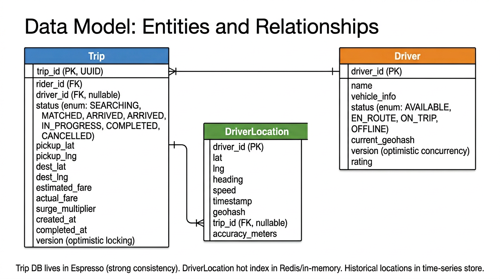
Figure 2: Entity-relationship diagram. Trip and Driver have a many-to-one relationship. Trip and DriverLocation have one-to-many (trip route = sequence of GPS snapshots).
Diagram Walkthrough: Data Model Relationships
This entity-relationship diagram shows the three core entities and how they connect:
- Trip (left, blue header): The central entity. Every ride request creates a Trip record. It holds the full lifecycle: pickup/destination coordinates, fare estimates, the current status (state machine), and a
version field for optimistic locking. The driver_id is nullable because during the SEARCHING state, no driver is assigned yet.
- Driver (right, orange header): Represents a registered driver. The
status field tracks whether they're AVAILABLE, EN_ROUTE to a pickup, ON_TRIP, or OFFLINE. The critical field is version—this enables optimistic concurrency control to prevent two ride requests from assigning the same driver simultaneously (the double-dispatch problem).
- DriverLocation (center, green header): GPS snapshots sent every ~4 seconds. Each record has lat/lng, heading, speed, and a pre-computed
geohash for spatial indexing. The trip_id field is nullable—it's set only when the driver is on an active trip, so location points can be associated with a specific trip's route.
- Trip → Driver relationship (many-to-one): One driver can have many trips over their lifetime, but each trip has at most one assigned driver. The crow's foot notation shows this directionality.
- Trip → DriverLocation relationship (one-to-many): A single trip generates hundreds of GPS snapshots (one every 4 seconds over a 20-minute ride = ~300 points). These snapshots reconstruct the route taken and are used for fare verification and dispute resolution.
Storage Split
The Trip and Driver entities live in Espresso (strong consistency, CAS updates). The DriverLocation hot index lives in Redis/in-memory (speed over durability). Historical DriverLocation records are persisted asynchronously to a time-series store via Kafka.
Trip Entity
Core entity tracking a ride from request to completion. Each trip moves through states (SEARCHING, MATCHED, ARRIVED, IN_PROGRESS, COMPLETED, CANCELLED).
| Field | Type | Purpose |
|---|
trip_id | UUID (PK) | Globally unique trip identifier |
rider_id | UUID (FK) | Who requested the ride |
driver_id | UUID (FK, nullable) | Assigned driver (null during SEARCHING) |
status | ENUM | Current state in the trip lifecycle |
pickup_lat/lng | DOUBLE | Pickup location coordinates |
dest_lat/lng | DOUBLE | Destination coordinates |
estimated_fare | DECIMAL | Pre-ride estimate (from Routing Service) |
actual_fare | DECIMAL | Final metered fare (after COMPLETED) |
surge_multiplier | FLOAT | Surge pricing factor at request time |
version | INT | Optimistic locking for state transitions |
DriverLocation Entity
Real-time GPS position updated every ~4 seconds. Stored in-memory for matching, persisted asynchronously for history.
| Field | Type | Purpose |
|---|
driver_id | UUID (PK) | Which driver |
lat, lng | DOUBLE | Current GPS coordinates |
heading | FLOAT | Direction of travel (0-360 degrees) |
speed | FLOAT | Current speed (for dead reckoning) |
timestamp | LONG | When this reading was taken |
geohash | STRING | Pre-computed geohash for spatial indexing |
trip_id | UUID (nullable) | Active trip (to associate GPS with route) |
Driver Entity
| Field | Type | Purpose |
|---|
driver_id | UUID (PK) | Unique driver identifier |
name, vehicle_info | STRING | Profile info shown to rider |
status | ENUM | AVAILABLE, EN_ROUTE, ON_TRIP, OFFLINE |
current_geohash | STRING | For fast geographic lookup |
version | INT | Optimistic concurrency control for double-dispatch prevention |
rating | FLOAT | Average driver rating |
Storage Ownership
LinkedIn Technology Mapping
- Trip DB → Espresso: Strong consistency required for state transitions. Espresso supports conditional updates (CAS) needed for the version-based optimistic locking.
- Driver DB → Espresso: Same reasoning—driver status changes need atomicity and version checks.
- Geospatial Index → In-memory (Couchbase/Redis): Hot path needs sub-millisecond writes. No durability required—drivers re-report within seconds.
- Historical Locations → Time-Series DB: Cold path—persisted asynchronously via Kafka for trip history, analytics, dispute resolution.
- Surge Pricing Map → Venice: Pre-computed, read-heavy derived data. Updated incrementally via Samza stream processing.
Step 3
API Endpoints
We derive API endpoints directly from the functional requirements (verbs identified earlier). Most real-time communication happens over WebSocket, but the API defines the REST surface for ride operations.
GET
/rides/estimate?pickup_lat={lat}&pickup_lng={lng}&dest_lat={lat}&dest_lng={lng}
Get fare estimate and ETA before requesting. Returns estimated fare, distance, duration, and surge multiplier.
{
"estimated_fare": { "amount": 24.50, "currency": "USD" },
"estimated_duration_min": 23,
"estimated_distance_km": 12.4,
"surge_multiplier": 1.0
}
POST
/rides
Confirm and request a ride. Triggers driver matching. Returns ride ID for tracking.
Request: { "pickup_lat": 37.77, "pickup_lng": -122.41,
"dest_lat": 37.62, "dest_lng": -122.38,
"payment_method_id": "pm_123" }
Response: { "ride_id": "trip_456", "status": "SEARCHING",
"estimated_fare": 24.50 }
GET
/rides/{id}
Get ride status, driver info, and ETA. Used for initial load; live updates come via WebSocket.
POST
/rides/{id}/cancel
Cancel a ride. Cancellation rules depend on current state (free during SEARCHING, fee after MATCHED).
PUT
/drivers/{id}/location
Update driver GPS coordinates. Sent every ~4 seconds as a WebSocket message; this REST endpoint serves as an HTTP fallback.
{ "lat": 37.785, "lng": -122.409,
"heading": 45.0, "speed": 13.4,
"timestamp": 1717000000 }
POST
/rides/{id}/offer/accept
Driver accepts a ride offer. Transitions ride to MATCHED and driver to EN_ROUTE.
POST
/rides/{id}/offer/decline
Driver declines a ride offer. System tries next candidate driver.
POST
/rides/{id}/rating
Rate the ride after completion. Both rider and driver can rate.
LinkedIn: Rest.li + D2
All REST endpoints would be built as Rest.li resources with D2 (Dynamic Discovery) for client-side service discovery and load balancing. D2 enables zero-config service mesh routing between microservices.
FR1
Ride Pricing
A rider opens the app, types "SFO Airport" as the destination, and sees "$24.50, ~23 min." This estimate appears before they commit to the ride.
The Problem
Fare depends on the actual driving route, not straight-line distance. A 10km straight line might be 15km of road with turns, highway ramps, and one-way streets. Straight-line pricing would consistently undercharge for complex routes and overcharge for highway trips.
Step 1: Route Calculation via Routing Service
The Ride Service sends pickup and destination coordinates to a Routing Service. The Routing Service models the road network as a weighted graph: intersections are nodes, road segments are edges, weights are expected travel times. A shortest-path algorithm (Dijkstra or A* variant) finds the fastest route and returns distance + estimated duration.
Step 2: Fare Calculation
fare = base_fare + (distance_km × per_km_rate) + (duration_min × per_min_rate)
If surge pricing is active in the pickup zone:
fare = fare × surge_multiplier
The response includes estimated fare, ETA, and surge multiplier so the rider can make an informed decision.
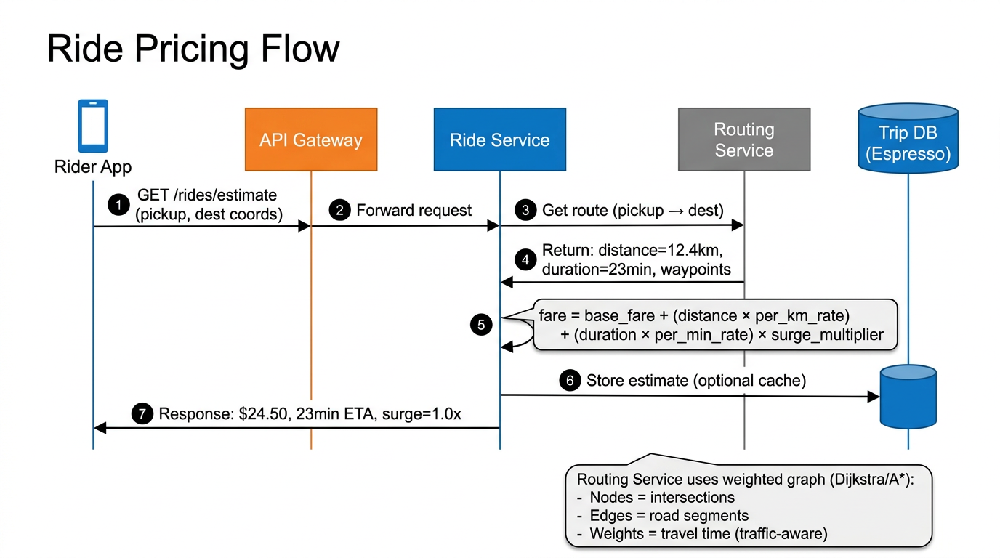
Figure 3: Ride pricing sequence. The Ride Service calls the Routing Service for route distance/duration, computes the fare, and returns the estimate to the rider. Trip record stored in Espresso.
Diagram Walkthrough: Ride Pricing Flow (Step-by-Step)
Read this sequence diagram left-to-right following the numbered arrows:
- Step 1 — Rider requests estimate: The Rider App sends
GET /rides/estimate with pickup coordinates (37.77, -122.41) and destination coordinates to the API Gateway. The rider hasn't committed to the ride yet—they just want to see the price.
- Step 2 — Gateway forwards: The API Gateway routes the request to the Ride Service. The gateway handles authentication, rate limiting, and request routing (via D2 service discovery at LinkedIn).
- Step 3 — Route calculation: The Ride Service calls the Routing Service with the pickup and destination coordinates. It asks: "What's the fastest driving route between these two points?"
- Step 4 — Route response: The Routing Service returns the computed route: distance = 12.4 km, duration = 23 minutes, plus optional waypoints. Internally, it used a weighted graph algorithm (Dijkstra/A*) on the road network, considering road types, turn costs, and one-way restrictions.
- Step 5 — Fare computation: The Ride Service applies the pricing formula:
fare = base_fare + (12.4 × per_km_rate) + (23 × per_min_rate) × surge_multiplier. The surge multiplier is fetched from Venice (pre-computed by Samza). If surge is 1.0x, the fare computes to $24.50.
- Step 6 — Optional cache: The Ride Service may store the estimate in Trip DB (Espresso) so that when the rider confirms, the system doesn't need to recalculate. This also provides an audit trail of estimated vs. actual fares.
- Step 7 — Response to rider: The estimate flows back through the API Gateway to the Rider App: $24.50, 23 min ETA, surge 1.0x. The rider sees this on their screen and decides whether to confirm.
Why the Routing Service matters
Without it, you'd compute straight-line ("as the crow flies") distance, which is wildly inaccurate. A 10km straight line through a city could be 18km of actual driving. The Routing Service uses a weighted graph where intersections are nodes, road segments are edges, and edge weights are travel times (factoring in speed limits and traffic).
Surge Pricing: Supply-Demand Balancing
When demand exceeds supply in a geographic zone, surge pricing kicks in to incentivize more drivers to that area. The feedback loop: higher surge → higher fare → more drivers attracted to zone → supply increases → surge decreases.
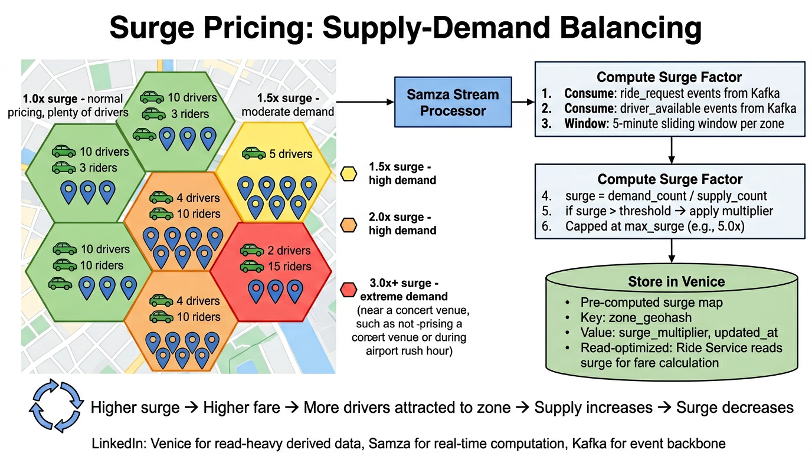
Figure 4: Surge pricing computed by Samza stream processing consuming ride request and driver availability events from Kafka. Pre-computed surge map stored in Venice for fast reads by the Ride Service.
Diagram Walkthrough: Surge Pricing Pipeline
Read this diagram from left (supply/demand map) to right (compute pipeline to storage):
- City divided into hexagonal zones (left side): Each zone has a color representing its current surge level. Green zones (1.0x) have plenty of drivers relative to demand (e.g., 10 drivers, 3 riders). Yellow zones (1.5x) have moderate imbalance. Orange (2.0x) and red (3.0x+) zones have severe driver shortages (e.g., only 2 drivers for 15 riders—think concert venue just ended or airport rush hour).
- Samza Stream Processor (center): Consumes two event streams from Kafka:
ride_request events (a rider asked for a ride in zone X) and driver_available events (a driver became available in zone X). It uses a 5-minute sliding window per zone to compute the demand-to-supply ratio.
- Compute Surge Factor: The formula is straightforward:
surge = demand_count / supply_count. If a zone had 15 ride requests and 5 available drivers in the last 5 minutes, surge = 3.0x. The multiplier is capped at a maximum (e.g., 5.0x) to prevent runaway pricing.
- Store in Venice (right side): The computed surge map is written to Venice with key =
zone_geohash and value = {surge_multiplier, updated_at}. Venice is read-optimized—the Ride Service reads surge for every fare estimate request at massive QPS with millisecond latency.
- Feedback Loop (bottom): This is the self-balancing mechanism. Higher surge → higher fares → riders see higher prices (some defer) AND more drivers are attracted to the high-surge zone (more money) → supply increases → surge decreases. This is a classic negative feedback loop that naturally balances supply and demand.
LinkedIn Stack for Surge Pricing
- Kafka: Events backbone—ride requests and driver availability events published to topics partitioned by geo zone.
- Samza: Stream processor consuming from Kafka with a 5-minute sliding window per zone. Computes
surge = demand_count / supply_count and publishes to Venice.
- Venice: Derived data store serving the pre-computed surge map. Key:
zone_geohash, Value: surge_multiplier. Read-optimized for the Ride Service to look up surge during fare calculation. Millisecond read latency at massive QPS.
Interview Question: Why Venice instead of Espresso for surge data?
Key Tradeoff: Venice vs Espresso
Surge data is a classic CQRS (Command Query Responsibility Segregation) pattern. The writes happen through Samza (command side), and reads happen from the Ride Service at high QPS (query side). Venice is optimized for this pattern: it ingests pre-computed data and serves it with millisecond latency. Using Espresso would work but adds unnecessary write overhead since Espresso is designed for mixed read/write OLTP workloads. Venice's read-only serving layer is more efficient for this access pattern.
FR2
Find & Match a Driver
The rider confirmed the ride. The system needs to answer: "Which available drivers are near this rider?" and assign the best one.
The Problem: Naive Query
The naive approach queries the driver database directly:
SQL
SELECT * FROM drivers
WHERE status = 'available'
AND distance(lat, lng, 37.77, -122.41) < 3000
ORDER BY distance
LIMIT 5;
With 2 million online drivers and no spatial index, this calculates distance for every row. Standard B-tree indexes on latitude or longitude alone don't help—they narrow one dimension but still scan thousands in the other. At 1,000 ride requests/sec during peak, each full-scan query exhausts the connection pool.
Step 1: Geospatial Index for Nearby Search
Instead of scanning all drivers, organize driver locations in a geohash-based spatial index that groups nearby drivers together. Encode each driver's coordinates into a string where nearby locations share a common prefix.
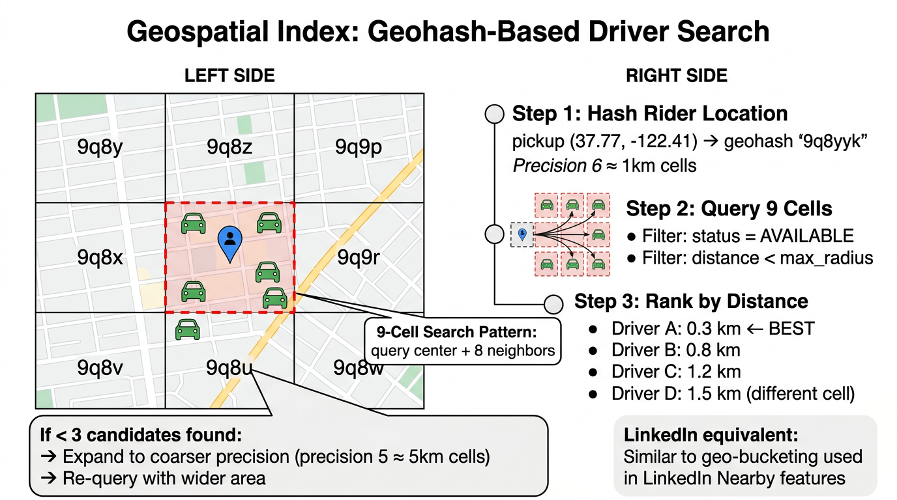
Figure 5: Geohash-based driver search. The rider's cell and 8 neighbors form a 9-cell search pattern. Drivers are filtered by availability and ranked by distance.
Diagram Walkthrough: Geospatial Search
Read the left side as the spatial visualization, the right side as the algorithm steps:
- City map grid (left): The city is divided into geohash cells. Each cell is labeled with its geohash prefix (e.g., "9q8y", "9q8z", "9q9p"). The rider (blue pin) is in the center cell. Green car icons represent available drivers scattered across cells. The dashed red border highlights the 9-cell search pattern: the rider's cell plus all 8 neighbors.
- Step 1 — Hash Rider Location: The rider's pickup coordinates (37.77, -122.41) are encoded into geohash string "9q8yyk" at precision 6. At this precision, each cell is roughly 1km × 1km. This is a simple mathematical encoding—no database query needed.
- Step 2 — Query 9 Cells: The system queries the center cell "9q8yyk" plus all 8 neighboring cells. Why 8 neighbors? Because a rider sitting near a cell boundary could have the nearest driver in an adjacent cell. The query filters for
status = AVAILABLE and excludes drivers beyond the maximum search radius using actual Haversine distance (geohash is an approximation; actual distance is the final filter).
- Step 3 — Rank by Distance: The remaining candidates are sorted by true distance from the rider's pickup point: Driver A at 0.3km (best), Driver B at 0.8km, Driver C at 1.2km, Driver D at 1.5km (from a different cell). The Matching Service takes the top candidates and proceeds to the offer flow.
- Expansion fallback (bottom): If fewer than 3 candidates are found (common in suburban or off-peak areas), the system expands to a coarser precision (precision 5 ≈ 5km cells) and re-queries. This progressively widens the search net until enough candidates are found or the maximum radius is reached.
Search Algorithm
- Compute the rider's geohash at search precision (precision 6 ≈ 1km cells)
- Query the rider's cell and all 8 neighboring cells—the 9-cell pattern handles drivers near cell boundaries
- Filter to
status = AVAILABLE and remove any beyond max search radius using actual distance
- Rank remaining candidates by distance from rider's pickup point
- If < 3 candidates found, expand to coarser precision (≈5km cells) and retry
Geohash (Recommended)
- String prefix encodes proximity
- Works with any key-value store
- Simple: prefix query + 8 neighbors
- Cells aren't perfectly uniform (vary by latitude)
- Used by: Uber (H3), Lyft, Grab
Quadtree / R-Tree
- Tree-based spatial index
- Better for non-uniform distributions
- More complex implementation
- Harder to shard across machines
- Better for in-process/single-node use cases
Step 2: Send Offer and Match
With a ranked list of nearby available drivers, the Matching Service sends a ride offer to the nearest candidate via their WebSocket connection: "New ride request, pickup at X, destination Y. Accept?"
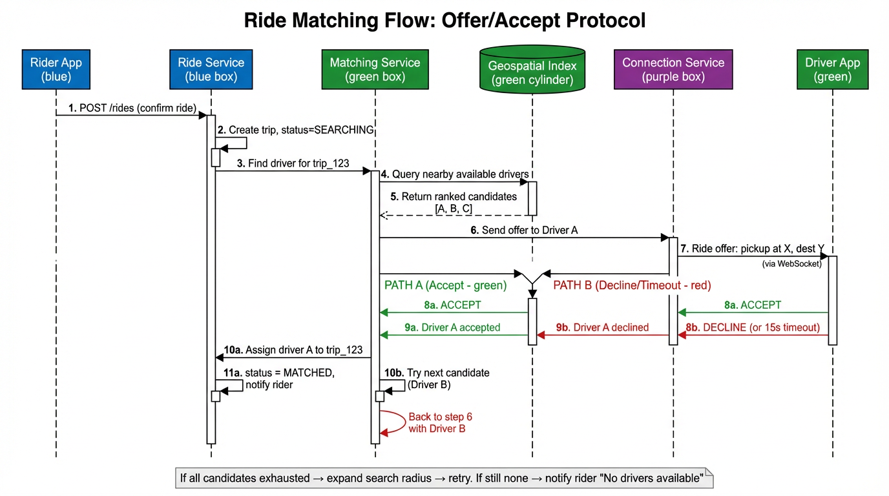
Figure 6: Offer/accept protocol. The Matching Service queries the geospatial index, sends an offer to the nearest driver via WebSocket, and handles accept/decline with fallback to next candidate.
Diagram Walkthrough: Matching Sequence (Step-by-Step)
This is a UML sequence diagram. Read it top-to-bottom as time progresses. The six columns represent different components, and the arrows show messages between them:
- Step 1 — Rider confirms ride: The Rider App sends
POST /rides to the Ride Service. The rider has seen the fare estimate and decided to proceed.
- Step 2 — Create trip record: The Ride Service creates a new Trip record in Espresso with
status = SEARCHING. This is the starting state of the trip lifecycle.
- Step 3 — Delegate to Matching: The Ride Service sends a "find driver for trip_123" request to the Matching Service. From here, the Matching Service takes over the search and offer flow.
- Step 4 — Query geospatial index: The Matching Service queries the in-memory Geospatial Index: "Give me available drivers near (37.77, -122.41) within 3km." This is the 9-cell geohash query described earlier.
- Step 5 — Ranked candidates returned: The index returns a ranked list of available drivers: [Driver A at 0.3km, Driver B at 0.8km, Driver C at 1.2km].
- Step 6 — Send offer to Driver A: The Matching Service sends a ride offer to Driver A through the Connection Service. The Connection Service knows which WebSocket instance holds Driver A's connection (via the Connection Registry).
- Step 7 — Driver sees offer: The offer arrives on Driver A's phone via their WebSocket: "New ride request, pickup at Market St, destination SFO Airport." The driver has 15 seconds to respond.
- Path A (green — Accept): Driver A taps "Accept." The accept message flows back: Driver App → Connection Service → Matching Service → Ride Service. The Ride Service updates the trip to
status = MATCHED and sets driver_id = A. The rider gets a notification with driver details and ETA.
- Path B (red — Decline/Timeout): If Driver A declines or 15 seconds pass with no response, the Matching Service moves to Driver B and repeats from Step 6. If all candidates are exhausted, it expands the search radius and tries again.
Offer/Accept Protocol
- Accept: Trip transitions to MATCHED. Rider is notified with driver details and ETA.
- Decline or timeout (15s): System tries the next candidate on the list.
- All candidates exhausted: Expand search radius and retry. If still none, notify rider "No drivers available."
The Double-Dispatch Problem
What if two ride requests simultaneously try to assign the same driver? Without protection, both succeed and the driver is double-booked.
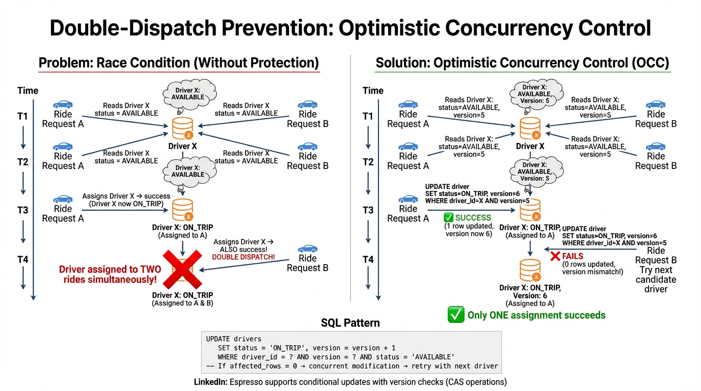
Figure 7: Race condition without protection (left) vs. optimistic concurrency control with version field (right). Only one assignment succeeds; the loser retries with the next candidate.
Diagram Walkthrough: Double-Dispatch Race Condition
This side-by-side comparison shows the problem and solution. Read each side top-to-bottom as a timeline:
Left Side — Problem (Without Protection):
- Time T1: Ride Request A reads Driver X's record:
status = AVAILABLE. Everything looks good.
- Time T2: Ride Request B also reads Driver X's record:
status = AVAILABLE. B doesn't know that A is also trying to assign this driver.
- Time T3: Request A writes:
UPDATE driver SET status = ON_TRIP WHERE driver_id = X. Success—Driver X is now ON_TRIP for ride A.
- Time T4: Request B writes the same update:
UPDATE driver SET status = ON_TRIP WHERE driver_id = X. Also succeeds! Now Driver X is "assigned" to BOTH rides. This is the double-dispatch bug. The driver gets two conflicting rides, and one rider will be left waiting indefinitely.
Right Side — Solution (Optimistic Concurrency Control):
- Time T1: Request A reads Driver X:
status = AVAILABLE, version = 5. It notes the version number.
- Time T2: Request B reads Driver X:
status = AVAILABLE, version = 5. Same version.
- Time T3: Request A writes:
UPDATE driver SET status = ON_TRIP, version = 6 WHERE driver_id = X AND version = 5. The WHERE clause checks the version. Since version is still 5, the update succeeds (1 row affected). Version is now 6.
- Time T4: Request B writes:
UPDATE driver SET status = ON_TRIP, version = 6 WHERE driver_id = X AND version = 5. The WHERE clause checks version = 5, but the version is now 6 (changed by A). 0 rows affected — the update fails. Request B detects the conflict and tries the next candidate driver instead.
The result: only ONE assignment ever succeeds. The loser detects the conflict immediately and retries, with no lock contention and no waiting.
Solution: Optimistic Concurrency Control (OCC)
SQL
UPDATE drivers
SET status = 'ON_TRIP', version = version + 1
WHERE driver_id = ?
AND version = ? -- Must match what we read
AND status = 'AVAILABLE'
-- If affected_rows = 0 → concurrent modification → retry with next driver
-- If affected_rows = 1 → success, driver exclusively assigned
LinkedIn: Espresso Conditional Updates
Espresso supports conditional updates (CAS—Compare-And-Swap) natively. The version field in the Driver entity enables optimistic concurrency control without distributed locks. When two matching requests race on the same driver, exactly one will succeed (the one whose version matches), and the other will get a version mismatch and try the next candidate. This is more scalable than pessimistic locking because it doesn't hold locks during the offer/accept timeout.
FR3
Real-Time Driver Tracking
The ride is matched. The rider watches their phone, waiting for the driver's car icon to appear and move toward them. This requires two things: a pipeline to ingest driver GPS updates at massive scale, and a way to push those updates to the rider in real-time.
The Problem
2 million online drivers send GPS coordinates every 4 seconds. That's roughly 500,000 writes per second at peak—potentially bursty after reconnection storms. And during an active trip, each location update must reach the rider's phone within seconds.
Step 1: WebSocket Connections
Both rider and driver apps maintain a persistent WebSocket connection to a Connection Service. WebSocket provides a bidirectional channel: the driver sends location updates upstream and receives ride offers downstream; the rider sends ride requests upstream and receives tracking updates downstream.
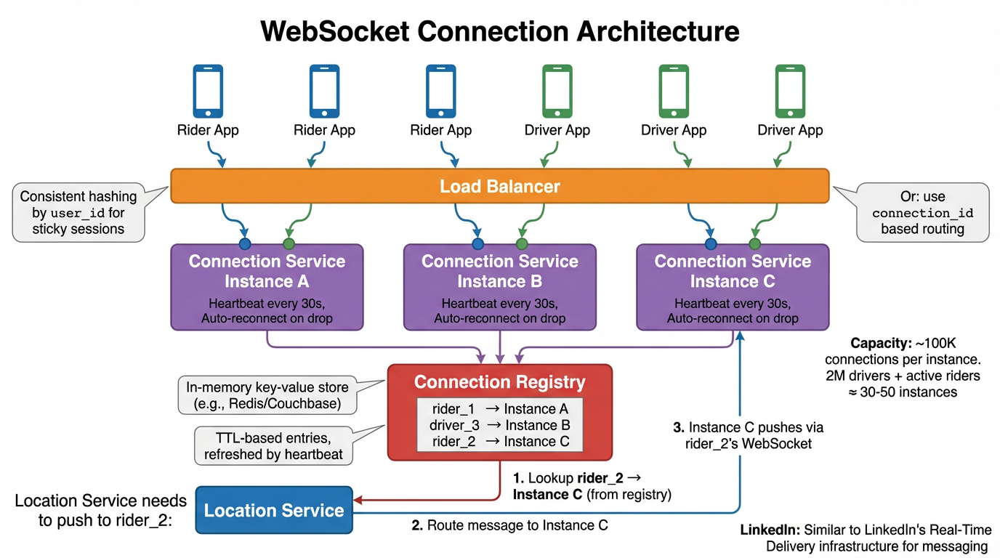
Figure 8: WebSocket connection architecture. A connection registry maps user_id to Connection Service instance for cross-instance message delivery. ~100K connections per instance, 30-50 instances for 2M+ connected users.
Diagram Walkthrough: WebSocket Connection Management
Read this diagram top-to-bottom to understand how millions of persistent connections are managed:
- Clients (top row): 6 phone icons represent the millions of Rider Apps (blue) and Driver Apps (green). Each maintains exactly one persistent WebSocket connection.
- Load Balancer (orange bar): When a client first connects, the load balancer routes the WebSocket handshake to a Connection Service instance. It uses consistent hashing by user_id for sticky sessions—this ensures the same user reconnects to the same instance (important because WebSocket connections are stateful). Alternatively, connection_id-based routing can be used.
- Connection Service Instances A, B, C (purple boxes): Each instance holds ~100K active WebSocket connections. With 2M drivers + active riders (~3M total connected users), you need 30-50 instances. Each instance runs heartbeats every 30 seconds to detect dead connections, and clients auto-reconnect on drops.
- Connection Registry (red box, center): This is the critical lookup table. It's an in-memory key-value store (Redis or Couchbase) that maps
user_id → Connection Service instance. When a client connects to Instance A, Instance A writes rider_1 → Instance A to the registry with a TTL. The TTL is refreshed by heartbeats. If the client disconnects and the TTL expires, the entry is removed.
- Push flow (bottom): When the Location Service needs to push a location update to rider_2, it follows three steps: (1) Look up rider_2 in the Connection Registry → learns rider_2 is on Instance C. (2) Route the message to Instance C via internal RPC. (3) Instance C pushes the message over rider_2's WebSocket. The rider sees the driver's car icon move on their map.
Why a Connection Registry?
Without it, the Location Service would have to broadcast to ALL Connection Service instances: "Does anyone have rider_2?" This is an O(N) fan-out that doesn't scale. The registry makes it O(1)—one lookup, one targeted push.
Why WebSocket over alternatives?
| Option | Pros | Cons | Verdict |
|---|
| Short Polling |
Simple, works through all proxies |
2M drivers polling every 2s = 1M req/sec of overhead. Most responses empty. Latency = polling interval. |
Too wasteful |
| SSE (Server-Sent Events) |
Server pushes, no polling overhead |
One-way only (server→client). Drivers still need separate upstream channel for sending locations. |
Half solution |
| WebSocket |
Persistent bidirectional. One connection handles both upload + download. Low per-message overhead. |
Connections are stateful. Need sticky sessions or connection registry for routing. |
Best fit |
Step 2: Location Ingestion Pipeline (Hot + Cold Path)
Every 4 seconds, each online driver's app sends a location update over WebSocket. The Location Service receives these and splits into two paths:
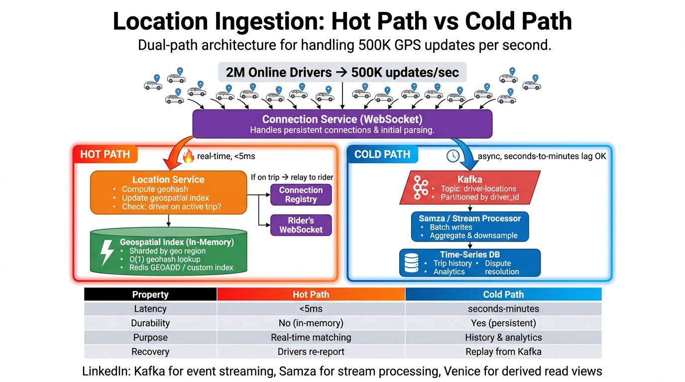
Figure 9: Dual-path architecture. Hot path: in-memory geospatial index for real-time matching (<5ms writes). Cold path: Kafka → Samza → Time-Series DB for durable history (seconds-to-minutes lag).
Diagram Walkthrough: Hot Path vs Cold Path
This is the most critical architectural decision in the system. Read from top (incoming GPS flood) down through the two diverging paths:
- Incoming flood (top): 2 million online drivers generate ~500K GPS updates per second. All of these flow through the Connection Service (WebSocket) which handles the persistent connections and initial message parsing.
- The split: The Connection Service forwards each GPS update to the Location Service, which immediately fans out to TWO independent paths. This is the core insight—speed and durability have conflicting requirements, so you split them.
- Hot Path (left, red/orange, labeled "real-time, <5ms"):
- The Location Service computes the driver's geohash from their lat/lng coordinates.
- It writes to the Geospatial Index (in-memory):
GEOADD drivers:9q8y D1 -122.409 37.785. If the driver moved to a new cell, the old entry is removed and a new one is added.
- The index is sharded by geographic region for O(1) geohash lookups.
- It also checks: "Is this driver on an active trip?" If yes, it triggers the location relay to the rider (Figure 10).
- No disk writes. No WAL. No fsync. This is what makes it fast. If the node crashes, we lose the current positions, but drivers re-report within 4 seconds.
- Cold Path (right, blue, labeled "async, seconds-to-minutes lag OK"):
- The Location Service publishes the GPS update to Kafka, topic
driver-locations, partitioned by driver_id. Kafka provides durability and buffering.
- A Samza stream processor consumes from Kafka, batches writes, aggregates and downsamples the data (e.g., keep 1 point per 10 seconds instead of every 4 seconds for archival).
- Batches are written to a Time-Series DB for permanent storage. This data serves trip history (show the route taken), analytics (average trip duration by city), and dispute resolution (rider claims driver took a longer route).
- Comparison table (bottom): Summarizes the tradeoff. The hot path optimizes for latency (<5ms) at the cost of durability. The cold path optimizes for durability at the cost of latency (seconds to minutes). Neither tries to do both—that's the key design principle.
Hot Path (Real-Time)
- Update geospatial index (compute geohash, store/move driver)
- Latency: <5ms
- Durability: None (in-memory)
- Purpose: Real-time matching & tracking
- Recovery: Drivers re-report within one GPS interval
Cold Path (Durable)
- Publish to Kafka → batch to time-series DB
- Latency: seconds to minutes
- Durability: Yes (persistent)
- Purpose: Trip history, analytics, disputes
- Recovery: Replay from Kafka
Key Insight: The geospatial index doesn't need durability. If it crashes, connected drivers send new updates within a few seconds. Replication or replay from Kafka helps close the gap. This means the real-time index can be purely in-memory, optimized for speed. The durable record can be written asynchronously. Neither needs to do both.
Step 3: Location Relay to Rider
When a driver's location update arrives and the driver is on an active trip, the Location Service forwards it to the rider. But the rider is connected to a different Connection Service instance.
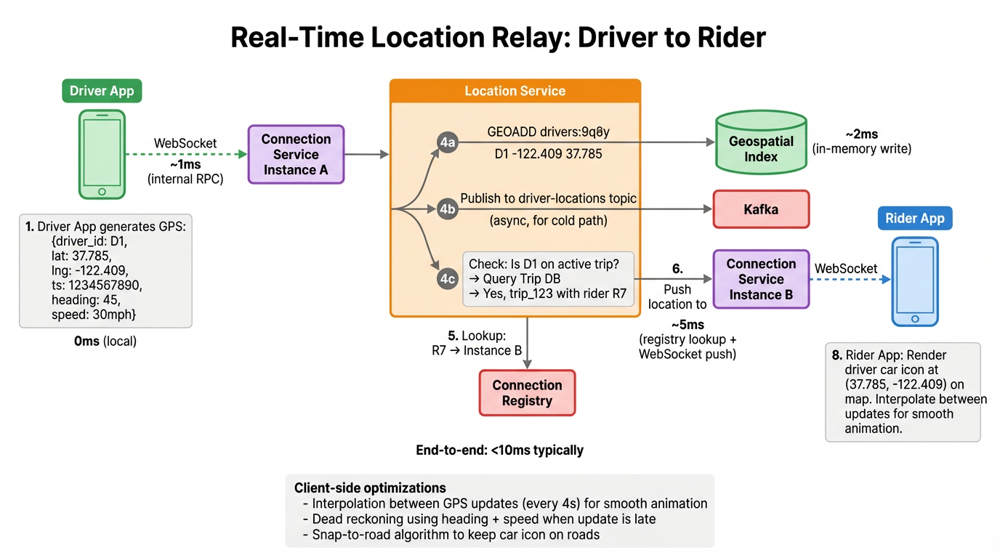
Figure 10: End-to-end location relay. Driver app → Connection Service A → Location Service → Connection Registry (lookup rider) → Connection Service B → Rider app. Total: <10ms typically.
Diagram Walkthrough: Location Relay (Step-by-Step with Timing)
This diagram traces a single GPS update from the driver's phone to the rider's map. Follow the numbered steps with timing annotations:
- Step 1 — Driver generates GPS (0ms): The Driver App reads the phone's GPS sensor and constructs a message:
{driver_id: D1, lat: 37.785, lng: -122.409, ts: 1234567890, heading: 45°, speed: 30mph}. This includes heading and speed so the rider's app can do dead reckoning between updates.
- Step 2 — WebSocket to Connection Service A (~1ms): The GPS message is sent over the driver's persistent WebSocket connection to their assigned Connection Service Instance A. This is an internal RPC within the data center—sub-millisecond network hop.
- Step 3 — Forward to Location Service: Connection Service A forwards the message to the Location Service.
- Step 4a — Update geospatial index (~2ms): The Location Service writes to the in-memory Geospatial Index:
GEOADD drivers:9q8y D1 -122.409 37.785. The driver's position in the matching index is now current.
- Step 4b — Publish to Kafka (async): Simultaneously, the Location Service publishes the update to the
driver-locations Kafka topic for the cold path. This is fire-and-forget—doesn't block the real-time relay.
- Step 4c — Check active trip: The Location Service queries: "Is driver D1 on an active trip?" It checks the Trip DB (or a local cache): Yes, D1 is on trip_123 with rider R7. This triggers the relay.
- Step 5 — Lookup rider's connection (~1ms): The Location Service looks up
R7 in the Connection Registry and learns that rider R7 is connected to Connection Service Instance B.
- Step 6 — Route to Instance B (~2ms): The Location Service sends the location payload to Connection Service Instance B via internal RPC.
- Step 7 — Push to rider via WebSocket: Instance B pushes the location update over rider R7's WebSocket connection.
- Step 8 — Rider sees movement: The Rider App receives the coordinates and renders the driver's car icon at (37.785, -122.409) on the map. It uses interpolation between this and the previous position (received 4 seconds ago) to animate the car icon smoothly along the road.
Total end-to-end latency: <10ms typically. The rider's map updates within milliseconds of the driver moving. The 4-second gap between updates is due to GPS reporting frequency, not system latency.
Client-Side Optimizations
- Interpolation: Smooth animation between GPS updates (every 4s) so the car icon doesn't "jump"
- Dead reckoning: Use heading + speed to estimate position when an update is late
- Snap-to-road: Keep car icon on roads instead of showing raw GPS (which might place it in a building)
Handling Disconnections
When a rider's WebSocket drops (tunnel, elevator), the system buffers recent events for each active trip. On reconnection, the client sends its last-seen event timestamp, and the server replays anything newer.
LinkedIn: Real-Time Delivery Platform
LinkedIn's Real-Time Delivery infrastructure for messaging uses a similar pattern: persistent connections with a connection registry that maps user IDs to instances. The registry is backed by a distributed key-value store with TTL-based entries refreshed by heartbeats. This is the same architecture needed for Uber's location relay.
FR4
Trip Lifecycle Management
A ride involves many state changes, each triggering different side effects. Without a formal state machine, these transitions become ad-hoc and error-prone—a missed notification, a fare that never starts metering, a payment that fires twice.
Step 1: Trip State Machine
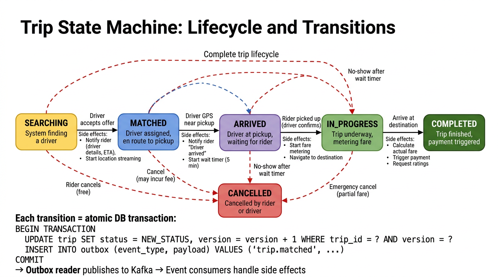
Figure 11: Trip state machine with 6 states and defined transitions. Each transition is performed atomically in a single database transaction (conditional state update + outbox insert).
Diagram Walkthrough: Trip State Machine
This state machine diagram shows the complete trip lifecycle. Read the happy path left-to-right (SEARCHING → MATCHED → ARRIVED → IN_PROGRESS → COMPLETED), and the cancel paths as red dashed arrows going down to CANCELLED:
- SEARCHING (yellow): Entry point. Created when the rider confirms a ride (
POST /rides). The system is actively searching for a nearby available driver via the Matching Service. Side effects: none yet—the rider sees a "Finding your driver..." spinner.
- SEARCHING → MATCHED (blue): Triggered when a driver accepts the ride offer. Side effects: (a) Push notification to rider with driver name, car model, license plate, and ETA. (b) Start streaming the driver's live location to the rider's map. (c) Push navigation to the driver showing pickup location.
- MATCHED → ARRIVED (purple): Triggered when the driver's GPS coordinates come within a threshold (e.g., 200 meters) of the pickup point. Side effects: (a) Push notification to rider: "Your driver has arrived." (b) Start a wait timer—typically 5 minutes. If the rider doesn't show up within the window, the driver can cancel (with the rider charged a no-show fee).
- ARRIVED → IN_PROGRESS (green): Triggered when the driver confirms the rider has entered the vehicle (taps "Start Trip" in the Driver App). Side effects: (a) Start metering—the system now tracks distance traveled and elapsed time for fare calculation. (b) Switch navigation to the destination.
- IN_PROGRESS → COMPLETED (dark green): Triggered when the driver arrives at the destination and confirms trip end. Side effects: (a) Calculate actual fare from metered distance and time, multiplied by the surge factor captured at trip creation. (b) Trigger payment processing (charge the rider's payment method). (c) Prompt both parties for ratings.
- Cancel paths (red dashed arrows): From SEARCHING: rider can cancel for free (no driver affected). From MATCHED: cancellation may incur a fee (driver already started driving to pickup). From ARRIVED: no-show after wait timer expires. From IN_PROGRESS: emergency cancel with partial fare charged based on metered distance so far.
- Atomicity (bottom): Each transition is wrapped in a single database transaction: the trip status update and an outbox event insert happen atomically. The
version field is incremented on every transition for optimistic locking—prevents concurrent conflicting transitions.
| State | Description | Enters When |
|---|
| SEARCHING | Rider requested, system finding a driver | Rider confirms ride (POST /rides) |
| MATCHED | Driver assigned, en route to pickup | Driver accepts ride offer |
| ARRIVED | Driver at pickup, waiting for rider | Driver GPS within threshold of pickup |
| IN_PROGRESS | Rider picked up, driving to destination | Driver confirms rider picked up |
| COMPLETED | Trip finished, fare calculated | Arrive at destination |
| CANCELLED | Cancelled by rider or driver | Cancel action (rules depend on state) |
Step 2: Transition Side Effects
| Transition | Side Effects |
|---|
| SEARCHING → MATCHED |
Notify rider (driver details, ETA). Start streaming driver location to rider. Notify driver with pickup location & navigation. |
| MATCHED → ARRIVED |
Notify rider "Your driver has arrived." Start wait timer—if rider doesn't show within 5 min, driver can cancel. |
| ARRIVED → IN_PROGRESS |
Start metering trip (distance + time for fare). Switch navigation to destination. |
| IN_PROGRESS → COMPLETED |
Calculate actual fare from metered distance/time + surge. Trigger payment processing. Prompt both parties for ratings. |
| Any → CANCELLED |
Rules depend on state: free during SEARCHING; fee after MATCHED; partial fare during IN_PROGRESS. |
The Outbox Pattern: Reliable Event Publishing
A critical problem: what if the DB update succeeds but the event publish to Kafka fails? The trip transitions but downstream consumers (notifications, payment) are never told.
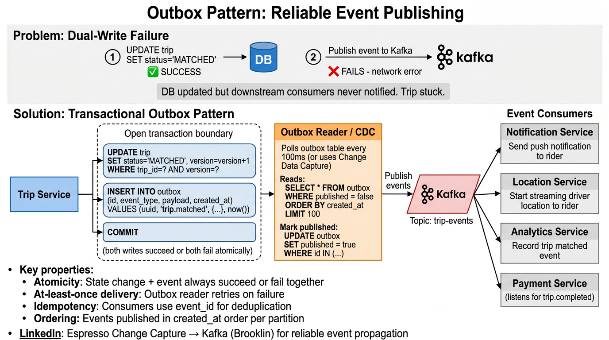
Figure 12: The outbox pattern solves the dual-write problem. State change + event are written atomically in one DB transaction. An outbox reader publishes events to Kafka independently. Consumers handle side effects.
Diagram Walkthrough: Outbox Pattern
This diagram shows the problem at the top and the solution below it:
Top — The Problem (Dual-Write Failure):
- Step 1: The Trip Service updates the database:
UPDATE trip SET status = 'MATCHED'. This succeeds (green checkmark). The trip is now MATCHED in the DB.
- Step 2: The Trip Service tries to publish an event to Kafka:
trip.matched. This fails (red X)—maybe a network blip, Kafka broker is temporarily unavailable. Now the DB says MATCHED, but the Notification Service, Location Service, and Payment Service never learn about it. The rider never gets the "Driver assigned" push notification. The system is in an inconsistent state.
Bottom — The Solution (Transactional Outbox):
- Trip Service opens a transaction boundary: Inside a single database transaction, it performs TWO writes:
- (a)
UPDATE trip SET status = 'MATCHED', version = version + 1 WHERE trip_id = ? AND version = ?
- (b)
INSERT INTO outbox (id, event_type, payload, created_at) VALUES (uuid, 'trip.matched', {...}, now())
Both writes are in the same transaction: they either BOTH succeed or BOTH fail. There's no state where the trip is updated but the event is missing.
- Outbox Reader / CDC: A separate process (orange box) periodically polls the outbox table:
SELECT * FROM outbox WHERE published = false ORDER BY created_at LIMIT 100. It reads unpublished events and publishes them to Kafka. After successful delivery, it marks them as published: UPDATE outbox SET published = true WHERE id IN (...). Alternatively, LinkedIn uses Brooklin (Change Data Capture) to stream changes from Espresso directly to Kafka without polling.
- Kafka (red parallelogram): The events flow into the
trip-events topic, partitioned by trip_id for ordering guarantees.
- Event Consumers (right): Four downstream services subscribe to the Kafka topic and handle their respective side effects:
- Notification Service: Sends push notification to rider ("Your driver John is on the way in a blue Toyota Camry").
- Location Service: Starts streaming the driver's location updates to the rider.
- Analytics Service: Records the "trip matched" event for metrics and dashboards.
- Payment Service: Listens specifically for
trip.completed events to trigger charges.
Key properties: Atomicity (DB change + event always together), at-least-once delivery (outbox reader retries on failure), idempotency (consumers use event_id to deduplicate), and ordering (events published in creation order per partition).
How It Works
- Atomic Transaction: In a single DB transaction, update the trip status AND insert an event record into an
outbox table. Both succeed or both fail.
- Outbox Reader: A separate process polls the outbox table (or uses Change Data Capture) and publishes events to Kafka. Marks events as published after successful delivery.
- Event Consumers: Notification Service, Payment Service, Analytics all subscribe to Kafka topics and handle their respective side effects.
SQL
BEGIN TRANSACTION;
UPDATE trip SET status = 'MATCHED', version = version + 1
WHERE trip_id = ? AND version = ?;
INSERT INTO outbox (id, event_type, payload, created_at)
VALUES (uuid(), 'trip.matched', '{"trip_id":"...","driver_id":"..."}', now());
COMMIT;
Idempotent Transitions
Network issues can cause duplicate transition requests. If the driver's app sends "arrived at pickup" twice, the Trip Service checks current state: if already ARRIVED, it's a no-op. Side effects also need deduplication via idempotency keys or unique constraints in the outbox.
LinkedIn: Espresso Change Capture → Brooklin → Kafka
LinkedIn uses Brooklin (their change data capture framework) to stream changes from Espresso to Kafka topics. This is exactly the outbox pattern: Espresso's change capture feeds events reliably to Kafka without dual-write risk. Downstream Samza jobs consume these events for side effects.
Deep Dive
Scaling 500K Location Writes/sec
2 million online drivers, each sending GPS every 4 seconds. ~500K writes/sec at peak, with spikes during rush hour. A relational database doing 500K durable random writes/sec on a single table would struggle—WAL/fsync overhead, index maintenance, and transaction coordination make this impractical.
Separating Hot and Cold Paths
The geospatial index for real-time matching doesn't need durability. If it crashes, connected drivers send new updates within seconds. This means the real-time index can be purely in-memory. The durable record can be written asynchronously.
| Property | Hot Path | Cold Path |
|---|
| Latency | <5ms | seconds-minutes |
| Durability | No (in-memory) | Yes (persistent) |
| Purpose | Real-time matching | History & analytics |
| Recovery | Drivers re-report | Replay from Kafka |
| Technology | Redis/Couchbase GEOADD | Kafka → Samza → Time-Series DB |
Sharding the Geospatial Index
Even in-memory, a single node handling 500K writes/sec may hit CPU limits. Shard the index by geographic region.
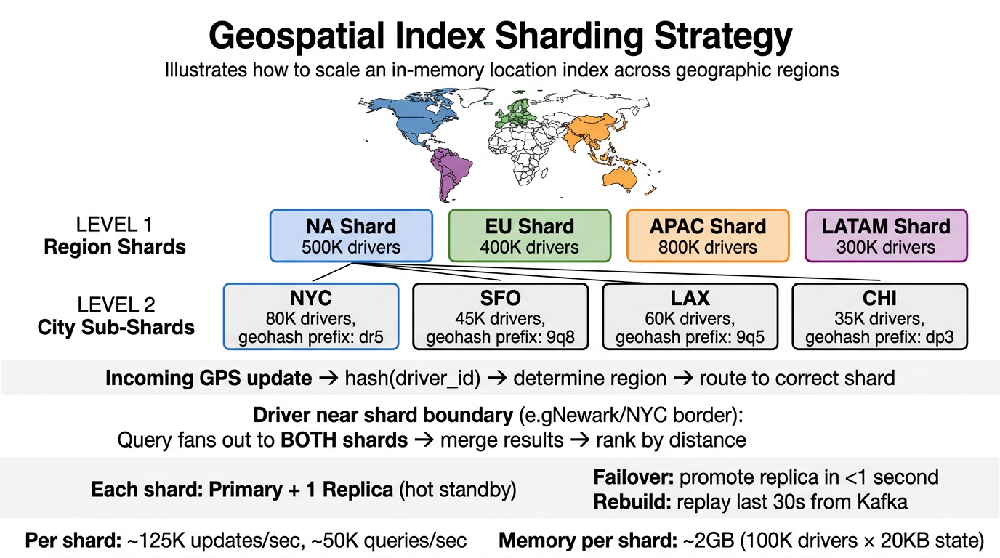
Figure 13: Two-level sharding: region shards (NA, EU, APAC, LATAM) and city sub-shards within each region. Each shard: ~125K updates/sec, Primary + Replica for failover.
Diagram Walkthrough: Two-Level Geospatial Sharding
Read this diagram top-to-bottom as a hierarchy—from global map to region to city:
- World map (top): The map shows four geographic regions, each shaded in a different color: North America (blue), Europe (green), Asia-Pacific (orange), and South America/LATAM (purple). Each region has different driver densities.
- Level 1 — Region Shards: The 2M online drivers are distributed across four region-level shards: NA (500K drivers), EU (400K), APAC (800K), LATAM (300K). Each shard is an independent in-memory instance handling only drivers in its region. At ~500K total updates/sec, each shard handles roughly 125K/sec—well within a single node's capacity.
- Level 2 — City Sub-Shards: Within the NA shard, further partition by metro area. NYC (80K drivers, geohash prefix "dr5"), SFO (45K drivers, prefix "9q8"), LAX (60K drivers, prefix "9q5"), CHI (35K drivers, prefix "dp3"). This prevents any single city's hotspot from overwhelming the region shard.
- Routing logic: Incoming GPS update → hash(driver_id) → determine region → route to correct shard. The region is determined from the coarse geohash prefix of the driver's coordinates.
- Cross-shard boundary: A driver near the Newark/NYC border might be in a different sub-shard than riders in NYC. The Matching Service handles this by querying BOTH shards when the rider's 9-cell search pattern crosses a boundary, then merging and ranking results by distance.
- Replication & failover: Each shard runs Primary + 1 hot standby Replica. If the primary fails, the replica is promoted in <1 second. To rebuild a shard from scratch: replay the last 30 seconds of location updates from Kafka.
- Capacity numbers (bottom): Per shard: ~125K updates/sec, ~50K queries/sec. Memory per shard: ~2GB (100K drivers × 20KB state including geohash, coordinates, metadata). This easily fits in a single machine's RAM.
Sharding Strategy
- Level 1 — Region: NA, EU, APAC, LATAM. Each shard handles drivers in its region.
- Level 2 — City: Within a region, partition by metro area using coarse geohash prefix (first 2-3 characters).
- Cross-shard queries: For riders near a shard boundary, query both shards and merge results.
- Failover: Each shard has Primary + hot standby Replica. Promote replica in <1 second.
- Rebuild: Replay last 30 seconds from Kafka, or wait for drivers to re-report.
Adaptive Update Frequency
Not all location updates are equally valuable:
- Parked driver: Reduce to every 30-60 seconds (position isn't changing)
- Moving toward pickup: Increase to every 2-3 seconds (rider watching closely)
- On active trip: Every 4 seconds (standard fare metering)
- Battery saving mode: OS may throttle to every 10-15 seconds
This can cut total update volume by 30-50% without affecting matching quality.
Handling Stale Data
If a driver's app loses connectivity, their last-known position stays in the index. After a timeout (e.g., 30 seconds without an update), mark the driver as stale and exclude them from matching. A background sweeper periodically removes stale entries.
Deep Dive
LinkedIn Technology Mapping
If you were building Uber's architecture using LinkedIn's technology stack, here's how each component maps:
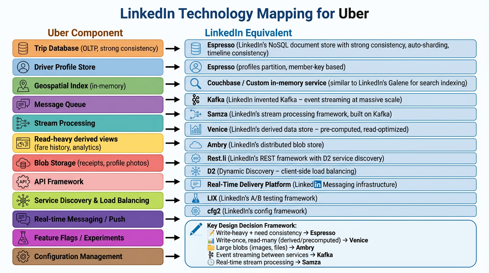
Figure 14: Mapping of Uber components to LinkedIn technologies. The key decision framework: write-heavy + consistency → Espresso, read-heavy derived → Venice, large blobs → Ambry.
Diagram Walkthrough: LinkedIn Technology Mapping
This is a two-column comparison table. Read each row left-to-right: the generic Uber component on the left, and its LinkedIn equivalent on the right:
- Trip Database → Espresso: Trip records need reads AND writes with strong consistency. When you transition a trip from SEARCHING to MATCHED, the conditional update (version check) must be atomic. Espresso provides timeline consistency—strong within a partition (and trips are partitioned by trip_id, so all operations on one trip hit the same partition).
- Driver Profile Store → Espresso: Same reasoning. The driver's status (AVAILABLE/ON_TRIP) and version field need atomic conditional updates for the double-dispatch prevention.
- Geospatial Index → Couchbase / Custom: This needs sub-millisecond in-memory writes with no durability. It's similar to how LinkedIn's Galene search platform maintains in-memory indexes for fast query serving.
- Message Queue → Kafka: LinkedIn invented Kafka. It's the backbone for all inter-service event streaming: location updates, trip events, surge computation inputs. Partitioned by driver_id for locations and trip_id for events to maintain ordering.
- Stream Processing → Samza: LinkedIn's stream processing framework, built on top of Kafka. Used here for computing surge pricing (windowed aggregation of demand/supply), analytics, and location batch writes.
- Read-heavy Derived Views → Venice: Surge pricing maps, fare history lookups, and driver rating aggregates are precomputed and read millions of times. Venice is optimized for this: batch or incremental ingestion, millisecond read-only serving.
- Blob Storage → Ambry: Trip receipts (PDFs), driver profile photos, route screenshots are large immutable binary objects. Ambry provides petabyte-scale storage with multi-datacenter replication and CDN integration.
- API Framework → Rest.li: LinkedIn's declarative REST framework. All Uber endpoints would be Rest.li resources with built-in pagination, batch operations, and projections.
- Service Discovery → D2: Client-side load balancing with dynamic discovery. When the Ride Service calls the Routing Service, D2 automatically discovers healthy instances and balances load across them.
- Real-time Push → Real-Time Delivery Platform: LinkedIn's messaging infrastructure uses the same pattern: persistent connections, connection registry, cross-instance message routing.
- Feature Flags → LIX: A/B testing for surge algorithm variants (linear vs. exponential surge curves), matching strategies (nearest-first vs. highest-rated-first), and UI experiments.
- Config Management → cfg2: Dynamic configuration for per-city pricing rules, surge caps, wait timer durations, and search radius thresholds—changeable without deployments.
Key Decision Framework (bottom of diagram): Write-heavy + need consistency → Espresso. Write-once, read-many (derived/precomputed) → Venice. Large blobs (images, files) → Ambry. Event streaming between services → Kafka. Real-time stream processing → Samza.
Espresso vs Venice vs Ambry Decision Tree
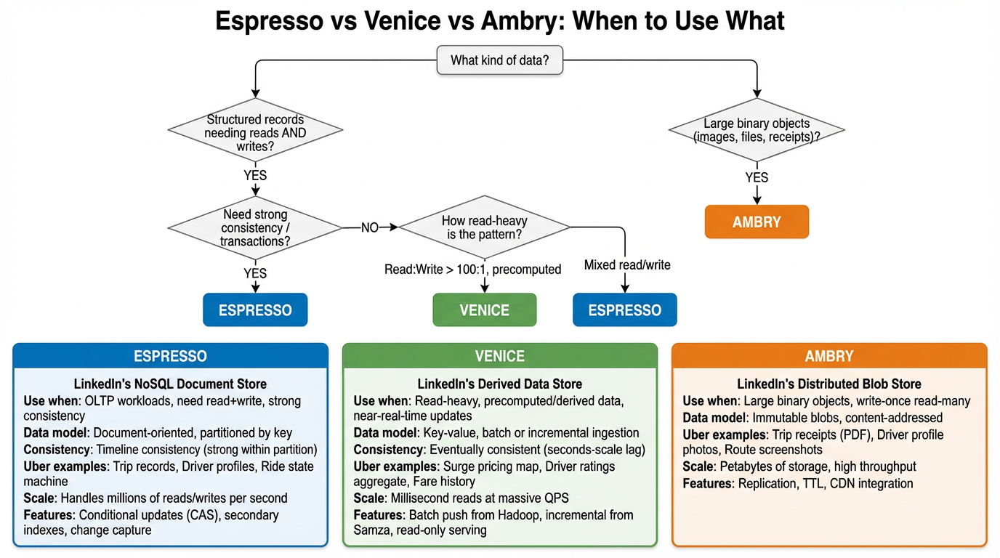
Figure 15: Decision tree for choosing between LinkedIn's three data stores. Each has a distinct sweet spot based on access pattern.
Diagram Walkthrough: Data Store Decision Tree
Read the flowchart top-down, following the decision branches:
- Start: "What kind of data?" This is the first question when choosing a LinkedIn data store for any component.
- Branch 1: "Structured records needing reads AND writes?" If yes, you're dealing with OLTP data (trips, driver profiles). Next question: "Need strong consistency / transactions?" If yes → Espresso (trip state machine needs atomic conditional updates). If no, check the read:write ratio. If reads vastly dominate (>100:1) and data is precomputed → Venice. If mixed read/write → still Espresso.
- Branch 2: "Large binary objects?" If yes (images, PDFs, receipts) → Ambry. These are write-once, read-many objects that don't fit in a document store.
- Three comparison cards (bottom):
- Espresso (blue): Document-oriented, partitioned by key, timeline consistency. Handles millions of reads/writes per second. Features: conditional updates (CAS), secondary indexes, change capture. Uber use: Trip records, Driver profiles, Ride state machine.
- Venice (green): Key-value, batch or incremental ingestion, eventually consistent (seconds lag). Millisecond reads at massive QPS. Features: batch push from Hadoop, incremental from Samza, read-only serving. Uber use: Surge pricing map, Driver ratings aggregate, Fare history.
- Ambry (orange): Immutable blobs, content-addressed, multi-DC replication. Petabytes of storage. Features: TTL, CDN integration. Uber use: Trip receipts (PDF), Driver profile photos, Route screenshots.
Espresso
LinkedIn's NoSQL Document Store
- OLTP workloads, read+write
- Strong (timeline) consistency
- Conditional updates (CAS)
- Auto-sharding by key
- Secondary indexes
- Change data capture
Uber use: Trip DB, Driver DB
Venice
LinkedIn's Derived Data Store
- Read-heavy, precomputed data
- Eventually consistent (seconds lag)
- Batch push from Hadoop
- Incremental updates from Samza
- Read-only serving layer
- Millisecond read latency
Uber use: Surge map, fare history, rating aggregates
Ambry
LinkedIn's Distributed Blob Store
- Large binary objects
- Write-once, read-many
- Immutable, content-addressed
- Multi-datacenter replication
- TTL support
- CDN integration
Uber use: Trip receipts, profile photos, route screenshots
Full LinkedIn Stack Mapping
| Uber Component | LinkedIn Equivalent | Why This Choice |
|---|
| Trip Database | Espresso | OLTP with strong consistency. CAS for state machine transitions. Partitioned by trip_id. |
| Driver Profile Store | Espresso | Read+write. Version-based OCC for double-dispatch prevention. |
| Geospatial Index | Couchbase / Custom | In-memory for <5ms writes. Similar to how LinkedIn's Galene handles search indexing. |
| Message Queue | Kafka | LinkedIn invented Kafka. Event streaming backbone. Partitioned by driver_id for location, by trip_id for events. |
| Stream Processing | Samza | LinkedIn's stream processing framework. Consumes from Kafka, computes surge, writes to Venice. |
| Surge Pricing / Derived Views | Venice | Pre-computed read-heavy data. Millisecond read latency. Updated incrementally from Samza. |
| Blob Storage | Ambry | Immutable blobs (receipts, photos). Petabyte-scale, multi-DC replication. |
| API Framework | Rest.li | Declarative REST framework with resource models, pagination, batch operations. |
| Service Discovery | D2 | Client-side load balancing with dynamic service discovery. Zero-config routing. |
| Real-Time Push | Real-Time Delivery | LinkedIn Messaging infrastructure. Persistent connections with connection registry. |
| Feature Flags | LIX | A/B testing for surge algorithm variants, matching strategies, UI experiments. |
| Config Management | cfg2 | Dynamic configuration for per-city pricing rules, thresholds, feature toggles. |
| Change Data Capture | Brooklin | Streams Espresso changes to Kafka. Powers the outbox pattern without dual-write risk. |
Key Decision Framework
- Write-heavy + need consistency → Espresso
- Write-once, read-many (derived/precomputed) → Venice
- Large blobs (images, files) → Ambry
- Event streaming between services → Kafka
- Real-time stream processing → Samza
- Database change propagation → Brooklin
Interview Question: Why not just use Espresso for everything?
Why Specialized Stores Matter
Espresso is excellent for OLTP but it's not optimized for:
- Read-only derived data: Venice avoids write amplification for data that's computed once and read millions of times (surge map, aggregated ratings).
- Large blobs: Ambry is purpose-built for immutable binary objects with multi-DC replication and CDN integration. Storing 5MB receipt PDFs in Espresso wastes its OLTP optimization.
- Time-series data: Location history at 500K/sec needs specialized time-series storage with columnar compression and downsampling. Espresso's row-oriented storage isn't efficient for this.
Using the right store for each access pattern reduces total cost and improves latency at scale.
Complete View
Complete Architecture
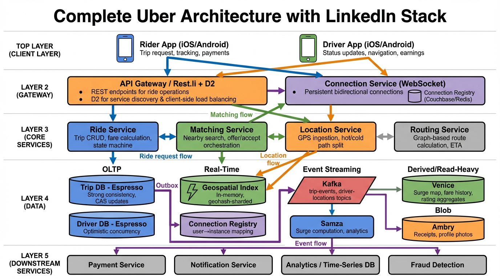
Figure 16: Complete Uber architecture with LinkedIn stack. Five layers: Client, Gateway (Rest.li + D2), Core Services, Data (OLTP, Real-Time, Event Streaming, Derived, Blob), and Downstream Services.
Diagram Walkthrough: Complete Architecture
This is the final, unified view of the entire system. Read it layer by layer, top to bottom, and follow the four colored data flows:
- Top Layer — Clients: Two mobile apps. The Rider App handles trip requests, tracking, and payments. The Driver App handles status updates, navigation, and earnings. Both maintain persistent WebSocket connections.
- Layer 2 — Gateway: Two entry points. The API Gateway / Rest.li + D2 handles all REST endpoints (fare estimates, ride creation, cancellation, ratings). D2 provides client-side load balancing. The Connection Service (WebSocket) manages persistent bidirectional connections for both riders and drivers, backed by a Connection Registry (Couchbase/Redis) for cross-instance message routing.
- Layer 3 — Core Services: Four microservices. Ride Service owns the trip lifecycle and fare calculation. Matching Service handles nearby driver search and the offer/accept flow. Location Service ingests GPS updates and splits into hot/cold paths. Routing Service computes driving routes and ETAs.
- Layer 4 — Data (five categories):
- OLTP: Trip DB and Driver DB in Espresso. Strong consistency, CAS updates, optimistic concurrency.
- Real-Time: Geospatial Index (in-memory, geohash-sharded) and Connection Registry.
- Event Streaming: Kafka (trip-events, driver-locations topics) with Brooklin for CDC from Espresso.
- Stream Processing: Samza for surge computation, analytics aggregation, and location batch writes.
- Derived/Read-Heavy: Venice for surge map, fare history, rating aggregates.
- Blob: Ambry for receipts and profile photos.
- Layer 5 — Downstream: Payment Service, Notification Service, Analytics/Time-Series DB, and Fraud Detection consume events from Kafka.
Four Data Flows (follow the colored arrows):
- Blue — Ride Request Flow: Rider App → API Gateway → Ride Service → Routing Service (get route/ETA) → Venice (get surge multiplier) → compute fare → Espresso (store trip with status=SEARCHING) → Matching Service (begin driver search).
- Green — Matching Flow: Matching Service → Geospatial Index (query 9 cells for nearby available drivers) → Connection Service (send ride offer via WebSocket) → Driver App (driver sees offer) → Driver accepts → Espresso (update trip status=MATCHED + driver status=EN_ROUTE with version check for double-dispatch prevention).
- Orange — Location Flow: Driver App sends GPS every 4s → WebSocket → Connection Service → Location Service → forks into: (a) Geospatial Index update (hot path, <5ms) and (b) Kafka publish (cold path, async). If driver is on active trip: Location Service → Connection Registry (lookup rider) → Connection Service → Rider App (car icon moves on map).
- Purple — Event Flow: Trip state changes in Espresso → Brooklin (CDC) reads outbox/changes → publishes to Kafka trip-events topic → Event Consumers: Notification Service (push alerts), Payment Service (charge rider on trip.completed), Analytics (dashboard metrics), Fraud Detection (anomaly checks).
Architecture Summary by Layer
| Layer | Components | LinkedIn Tech |
|---|
| Client |
Rider App (iOS/Android), Driver App (iOS/Android) |
— |
| Gateway |
API Gateway (REST endpoints), Connection Service (WebSocket + Connection Registry) |
Rest.li, D2, Real-Time Delivery |
| Core Services |
Ride Service (trip lifecycle, fare), Matching Service (nearby search, offers), Location Service (GPS ingest, hot/cold split), Routing Service (graph-based ETA) |
Java microservices on Rest.li |
| OLTP Data |
Trip DB (strong consistency, CAS), Driver DB (OCC version field) |
Espresso |
| Real-Time Data |
Geospatial Index (in-memory, geohash-sharded), Connection Registry |
Couchbase / Redis |
| Event Streaming |
trip-events topic, driver-locations topic, CDC from Espresso |
Kafka, Brooklin |
| Stream Processing |
Surge computation, analytics aggregation, location batch writes |
Samza |
| Derived Data |
Surge pricing map, fare history, rating aggregates |
Venice |
| Blob Storage |
Trip receipts, profile photos |
Ambry |
| Downstream |
Payment Service, Notification Service, Analytics, Fraud Detection |
— |
Data Flow Summary
- Ride Request Flow: Rider App → API Gateway → Ride Service → Routing Service (ETA) → Venice (surge) → Espresso (store trip) → Matching Service
- Matching Flow: Matching Service → Geospatial Index (nearby search) → Connection Service → Driver App (offer) → Driver accepts → Espresso (update trip + driver with OCC)
- Location Flow: Driver App → WebSocket → Location Service → Geospatial Index (hot) + Kafka (cold) → Connection Registry → Rider App
- Event Flow: Espresso (trip state change) → Brooklin (CDC) → Kafka → Event Consumers (Notification, Payment, Analytics)
Interview Prep
Interview Questions & What They Test
These are the deep dive questions an interviewer is likely to ask after you present the high-level design. Each question tests specific distributed systems knowledge.
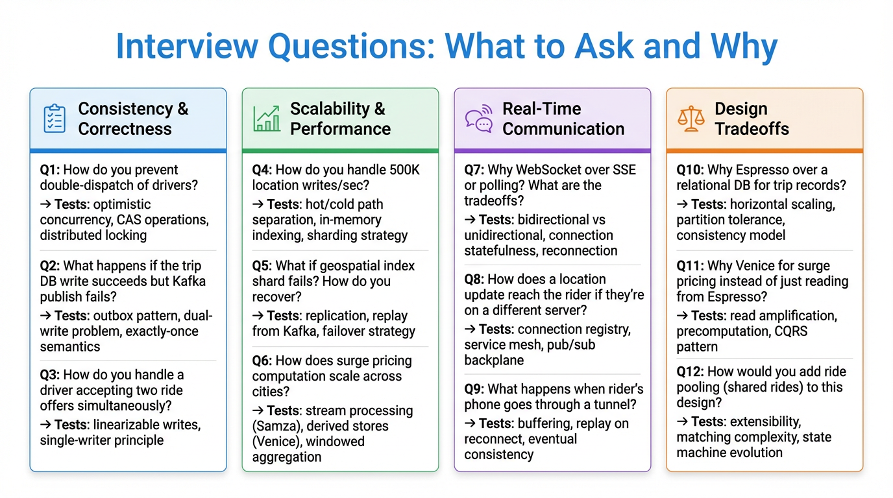
Figure 17: Interview questions organized by category: Consistency, Scalability, Real-Time Communication, and Design Tradeoffs.
Diagram Walkthrough: Interview Question Categories
This diagram organizes 12 deep-dive interview questions into four categories. Each question is followed by "Tests:" which tells you what distributed systems concept the interviewer is probing for:
- Consistency & Correctness (blue, Q1-Q3): These questions test whether you understand how to maintain data integrity in a concurrent, distributed system. The interviewer wants to hear about optimistic concurrency control, the outbox pattern, and the dual-write problem. If you can't explain double-dispatch prevention, it's a red flag.
- Scalability & Performance (green, Q4-Q6): These questions test whether you can handle the scale numbers (500K writes/sec, 20M trips/day). The interviewer wants to hear about hot/cold path separation, in-memory indexing, geographic sharding, and stream processing. The key insight is that you don't solve everything with one database.
- Real-Time Communication (purple, Q7-Q9): These questions test your understanding of persistent connections, bidirectional messaging, and handling network unreliability. The interviewer wants to hear about WebSocket vs SSE vs polling tradeoffs, connection registries for cross-instance routing, and buffering/replay for disconnections.
- Design Tradeoffs (orange, Q10-Q12): These questions test whether you can justify your technology choices. Why Espresso over PostgreSQL? Why Venice instead of just reading from Espresso? How would you extend the design for ride pooling? The interviewer wants to see that you understand CQRS, access pattern optimization, and state machine extensibility.
Interview Strategy
Present the high-level architecture first (Figure 1). Then walk through each functional requirement (FR1-FR4), incrementally adding components. Expect the interviewer to dive deep on one or two topics from the categories above. The most common deep dives are: double-dispatch prevention (Q1), 500K writes/sec scaling (Q4), and WebSocket vs alternatives (Q7).
Consistency & Correctness
Q1: How do you prevent double-dispatch of drivers?
What it tests: Optimistic concurrency control, CAS operations, distributed locking tradeoffs.
Answer framework: Version field on Driver entity. Read driver (status=AVAILABLE, version=N). Conditional update: SET status=ON_TRIP, version=N+1 WHERE version=N. If affected_rows=0, another request won. Retry with next candidate. This is more scalable than pessimistic locks because it doesn't hold locks during the 15-second offer timeout.
Follow-up: Why not use a distributed lock (e.g., ZooKeeper)? Because the lock would need to be held for the entire offer/accept window (15 seconds), blocking other requests. OCC with retry is better for high-contention, short-duration operations.
Q2: What happens if the trip DB write succeeds but Kafka publish fails?
What it tests: Outbox pattern, dual-write problem, exactly-once semantics.
Answer framework: Use the transactional outbox pattern. Write the state change AND the event to the same DB in one transaction. A separate outbox reader (or Espresso Change Capture via Brooklin) publishes to Kafka. This ensures atomicity—either both succeed or both fail.
Follow-up: How do consumers handle duplicate events? Idempotency keys. Each event has a unique ID. Consumers track processed IDs and skip duplicates.
Q3: How do you handle a driver accepting two ride offers simultaneously?
What it tests: Linearizable writes, single-writer principle.
Answer framework: The driver's accept request goes through the Matching Service, which performs the Espresso conditional update on the Trip (version check). Even if two offers were somehow sent (which shouldn't happen since the driver's status should already be EN_ROUTE after the first offer is sent), the second accept would fail the version check.
Scalability & Performance
Q4: How do you handle 500K location writes/sec?
What it tests: Hot/cold path separation, in-memory indexing, sharding strategy.
Answer framework: Split into two paths. Hot path: in-memory geospatial index (Redis GEOADD or custom), sharded by geographic region. No durability needed—drivers re-report in seconds. Cold path: Kafka → Samza → time-series DB in batches. Neither path does both speed AND durability.
Follow-up: How do you shard? By geohash prefix (Level 1: region, Level 2: city). Cross-boundary queries fan out to adjacent shards and merge.
Q5: What if a geospatial index shard fails? How do you recover?
What it tests: Replication, replay from Kafka, failover strategy.
Answer framework: Three recovery options: (1) Hot standby replica—promote in <1 second. (2) Replay last 30 seconds from Kafka to rebuild. (3) Wait for drivers to re-report naturally (takes a few GPS intervals). Most deployments use replica promotion + client re-reporting as backup.
Q6: How does surge pricing computation scale across cities?
What it tests: Stream processing (Samza), derived stores (Venice), windowed aggregation.
Answer framework: Samza consumes ride_request and driver_available events from Kafka. 5-minute sliding window per geographic zone. Computes demand/supply ratio. Writes surge map to Venice (key: zone_geohash, value: surge_multiplier). Ride Service reads from Venice at fare calculation time. Venice handles millions of reads/sec with millisecond latency. Each city's zones are processed independently—naturally parallelizable.
Real-Time Communication
Q7: Why WebSocket over SSE or polling? What are the tradeoffs?
What it tests: Bidirectional vs unidirectional, connection statefulness, reconnection.
Answer framework: WebSocket: bidirectional (driver sends GPS upstream, receives offers downstream) over one connection. SSE: server-to-client only, would need separate channel for driver uploads. Polling: 1M requests/sec of pure overhead at 2M drivers. Tradeoff: WebSocket connections are stateful—need sticky sessions or connection registry. Worth it for the bandwidth savings and latency.
Q8: How does a location update reach the rider if they're on a different server?
What it tests: Connection registry, pub/sub backplane, message routing.
Answer framework: Connection registry (Redis/Couchbase) maps user_id → Connection Service instance. When Location Service needs to push to rider_R7: (1) Look up R7 in registry → Instance B. (2) Route message to Instance B. (3) Instance B pushes via R7's WebSocket. Registry entries have TTL, refreshed by heartbeat.
Q9: What happens when rider's phone goes through a tunnel?
What it tests: Buffering, replay on reconnect, eventual consistency.
Answer framework: System buffers recent events for each active trip (small in-memory queue per trip). On WebSocket reconnection, client sends last-seen event timestamp. Server replays anything newer. Client-side: dead reckoning using last known heading + speed for smooth animation until reconnection. If offline too long (>30s), show stale indicator on map.
Design Tradeoffs
Q10: Why Espresso over a relational DB (MySQL/Postgres) for trip records?
What it tests: Horizontal scaling, partition tolerance, consistency model.
Answer framework: At 20M trips/day, a single-node relational DB would struggle. Espresso provides: (1) Auto-sharding by trip_id—horizontal scaling without application-level sharding logic. (2) Timeline consistency—strong within a partition, which is sufficient since trip operations are keyed by trip_id. (3) Conditional updates (CAS) for the state machine version checks. (4) Change data capture via Brooklin for the outbox pattern. A sharded MySQL/Postgres with Vitess could work but requires more operational complexity.
Q11: Why Venice for surge pricing instead of just reading from Espresso?
What it tests: Read amplification, precomputation, CQRS pattern.
Answer framework: Surge data is computed by Samza and read by every fare estimate request. The read:write ratio is extreme (millions of reads for every update). Venice is optimized for this: it ingests precomputed data (from Samza) and serves reads with minimal overhead. Espresso would work but its OLTP optimization (write-ahead logging, transaction support) adds unnecessary overhead for read-only serving. Venice's read path is simpler and faster for this access pattern.
Q12: How would you add ride pooling (shared rides) to this design?
What it tests: Extensibility, matching complexity, state machine evolution.
Answer framework: Three changes: (1) Matching Service: Instead of 1:1 matching, solve a constrained optimization—can this rider share with an existing in-progress trip? Check if detour adds <X minutes. (2) Trip entity: Add rider_ids (array) instead of single rider_id. Add waypoints (ordered list of pickup/dropoff). (3) State machine: New states like PICKING_UP_SECOND_RIDER. New transitions and side effects for multi-rider notifications. The core architecture (WebSocket, location ingestion, Kafka events) stays the same.
Questions YOU Should Ask
In an interview, always clarify scope before designing. Good questions to ask:
| Question | Why It Matters |
|---|
| Do we need ride pooling or just 1:1 rides? | Pooling dramatically changes matching algorithm complexity |
| What geographies? Single city or global? | Global requires multi-region deployment, cross-region data sync |
| Do we need scheduling (future rides)? | Adds a scheduling service and delayed matching queue |
| What payment methods? Just credit cards? | Cash rides need a different completion flow (no automatic charge) |
| How accurate do fare estimates need to be? | Determines complexity of routing service (traffic-aware? toll-aware?) |
| Do we handle driver onboarding and background checks? | Usually out of scope—confirm with interviewer |
| What level of fraud detection is needed? | Fake GPS, phantom trips, etc. Usually out of scope but good to mention |